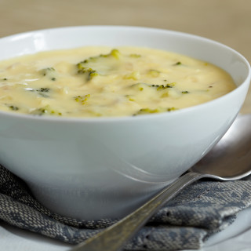

Broccoli Cheddar Soup

This is a great soup. Creamy and delicious.
Ingredients
- 3 tablespoons Unsalted butter
- 1 large Onion ; chopped
- 2 cloves Garlic ; chopped
- 1 1/2 pound Broccoli ; stems peeled into 1/2-inch pieces, florets chopped into 1/2-inch
- 4 cups Chicken broth ; low-sodium
- 1 cup Heavy cream
- 1/4 teaspoon Ground nutmeg
- 3 cups Mild cheddar cheese ; shredded
- Salt & Cayenne pepper
Steps
- Melt butter in large pot over medium heat.
Add onion and cook until soft, about 5 minutes.
Add garlic and cook until fragrant, about 1 minute.
Add broccoli stems and cook until bright green and just beginning to soften, about 5 minutes.
Stir in broth, increase heat until medium-high, and simmer until stems are tender, about 5 minutes. Add florets, cream, and nutmeg and simmer until florets are tender, about 5 minutes.
- Puree soup in 2 batches in blender until smooth, return to pot, and bring to simmer over medium heat. Stir in cheddar until melted and season with salt and cayenne pepper. Serve, garnished with extra cheese.
(Soup can be refrigerated for up to 3 days. Reheat over medium heat until hot, but do not boil or cheese will seperate.)